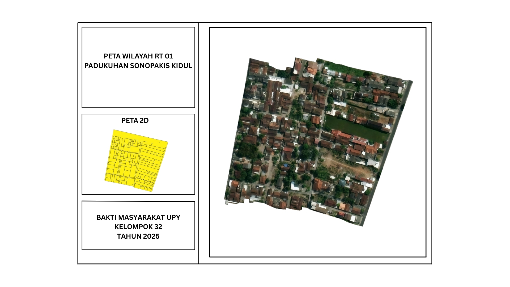
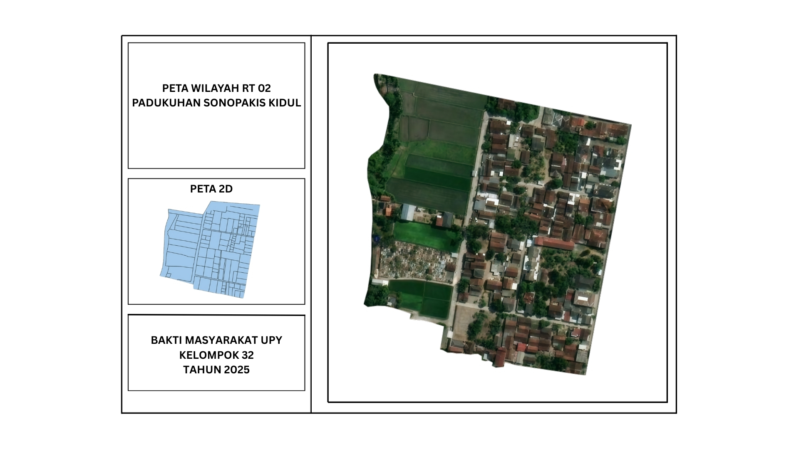
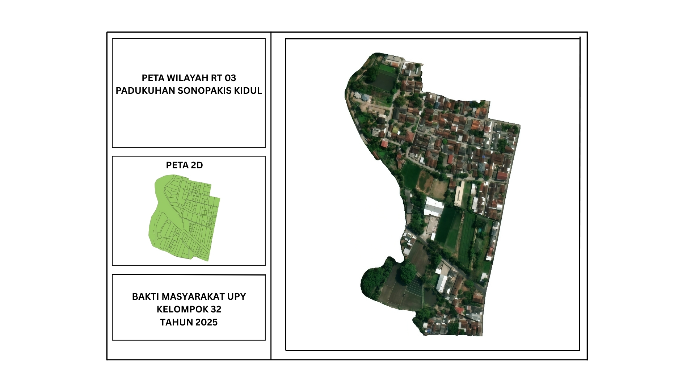
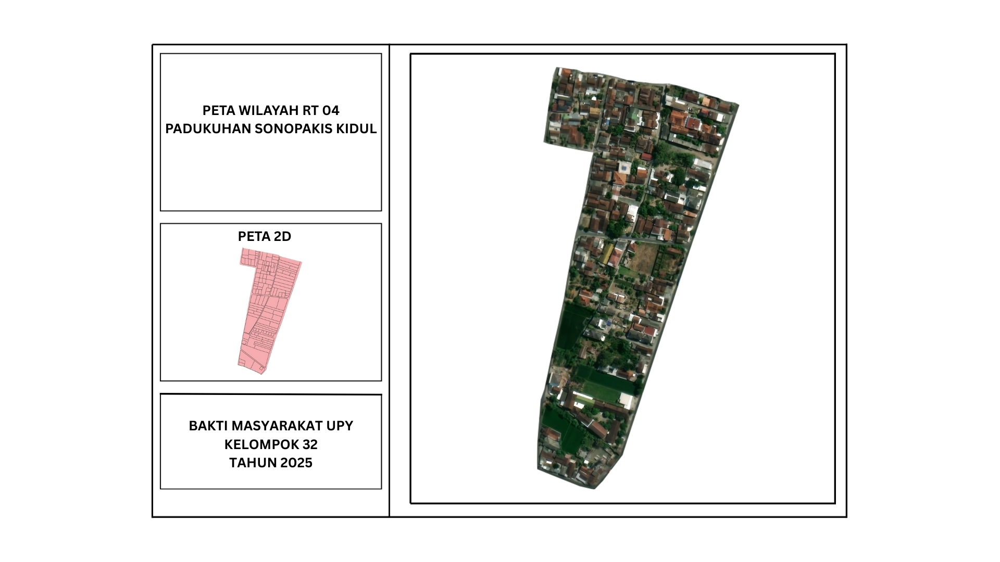
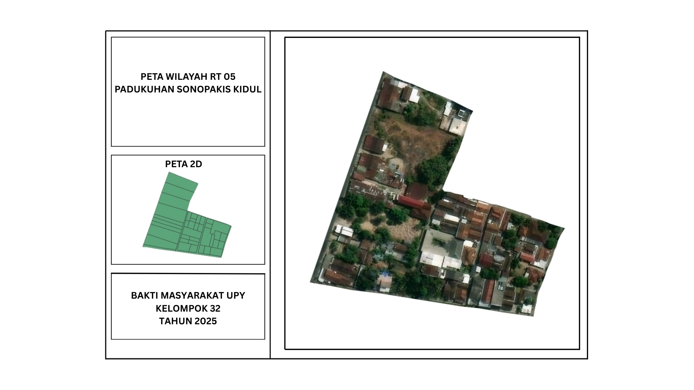
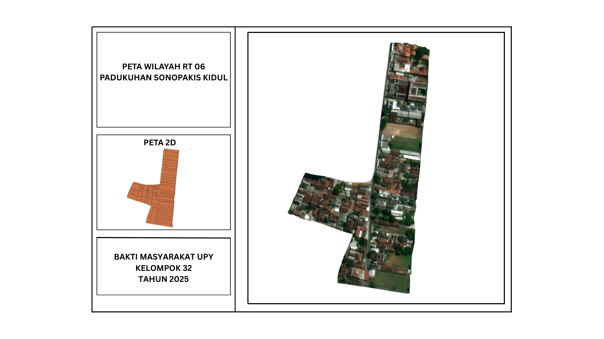
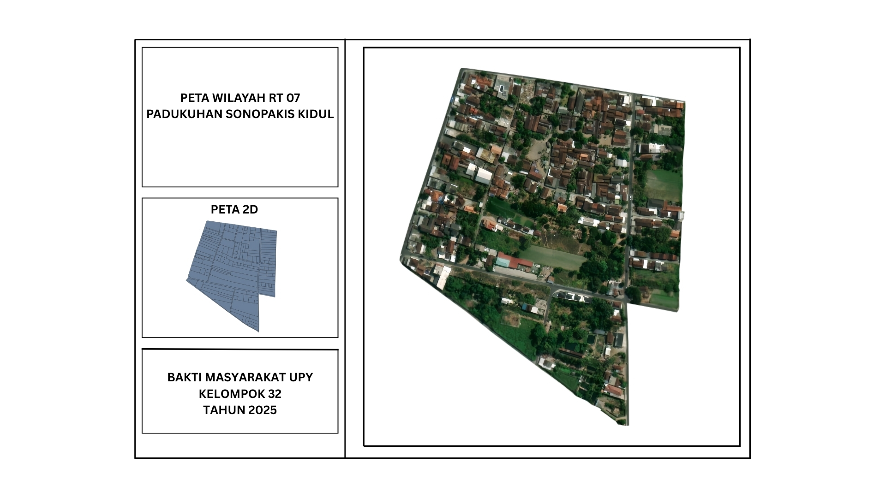
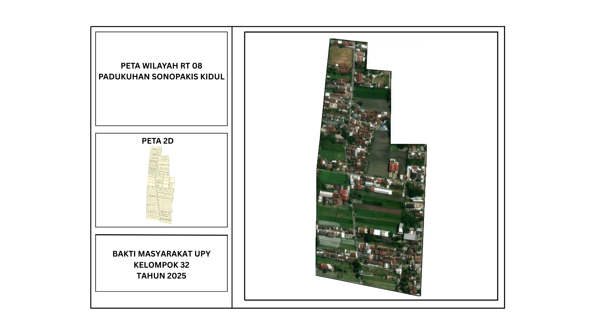

Rumah Dukuh
RT 01
RT 02
RT 03
RT 04
RT 05
RT 06
RT 07
RT 08
Masjid Tunas Muslim
Masjid Wakaf Baabul Jannah
Masjid Al-Ikhwan
Masjid Ar-Roudhoh
Masjid Al-Mustaqim
Musholla Rahmatul Jannah
SD Negeri Sonosewu
TK Pertiwi 41
SPS Bunga Matahari
Apotek Salam
Bidan Nurul Apri
Posyandu Aster 1
Posyandu Aster 2
Lapangan Volly Sonopakis Kidul
Lapangan Pingpong
Lapangan Volly Soboman
Lapangan Volly Sanggrahan
Lapangan RT05
Balai Karang Taruna
Sekretariat Bregada Wirosobo
Makam Soboman
Makam Jati Sasono Rogo Sonopakis Kidul
Peta RT 01

Wilayah RT 01 mencakup area pemukiman utama dengan akses jalan yang baik dan berbagai fasilitas seperti Posyandu Aster 1, Apotek Salam, Masjid Wakaf Baabul Jannah, dan Lapangan Pingpong.
97 KK
Posyandu
Apotek
Lapangan
Masjid
Peta RT 02

Wilayah RT 02 dilengkapi dengan Lapangan Volly Sonopakis Kidul yang menjadi tempat pusat kegiatan dan olahraga warga RT 02 Sonopakis Kidul.
83 KK
Lapangan
Sawah
Makam Jati Sasono Rogo Sonopakis Kidul
Peta RT 03

Wilayah RT 03 memiliki Area Persawahan dan area yang hijau.
105 KK
Area Hijau
Peta RT 04

Wilayah RT 04 strategis dengan akses ke Masjid Al-Ikhwan dan dekat dengan pusat pendidikan dan kesehatan.
91 KK
Masjid
Bidan
SD & TK
Peta RT 05

Wilayah RT 05 memiliki fasilitas jalan lingkungan yang asri dan Lapangan sebagai pusat kegiatan warga RT05
45 KK
Lapangan
Peta RT 06

Wilayah RT 06 terletak strategis dekat dengan RT 05 dan dilengkapi Masjid Tunas Muslim sebagai tempat ibadah umat muslim.
44 KK
Masjid
Peta RT 07

Wilayah RT 07 dilengkapi dengan Masjid Ar-Roudhoh, Lapangan Volly Soboman, SPS Bunga Matahari, Posyandu Aster 2, Balai Karang Taruna dan Sekretariat Bregada Wirosobo.
95 KK
Masjid
Lapangan
SPS Bunga Matahari
Posyandu
Balai Karang Taruna
Sekretariat Bregada Wirosobo
Makam Soboman
Peta RT 08

Wilayah RT 08 di lengkapi dengan Lapangan Volly Sanggrahan,Masjid Al-Mustaqim,Musholla Rahmatul Jannah dan Rumah Dukuh sebagai pusat pemerintahan.
76 KK
Masjid
Musholla
Rumah Dukuh
Lapangan